This vignette briefly explores functionalities possible with
gtUtils and gt.
Coloring cells with pills
This section showcases how to use the gt_color_pills
function from the gtUtils package to style cells with
rounded color “pills” in a table. This function is inspired by similar
features in the gtExtras package by Thomas Mock but adds
its own customizable elements for formatting and color control.
Basic Usage
The simplest way to use gt_color_pills is to apply it to
a column in a gt table. By default, it will color the cells on a
continuous scale.
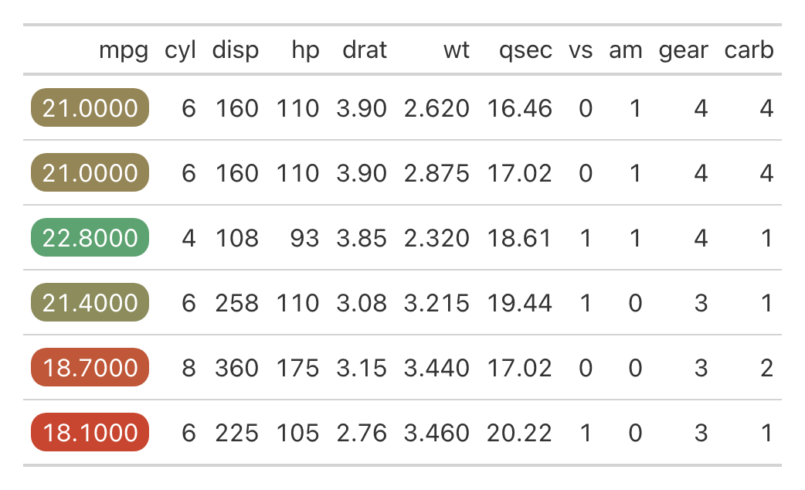
Trimming Digits
You can control the number of decimal places displayed using the digits argument. In this example, we trim the values to one decimal place:
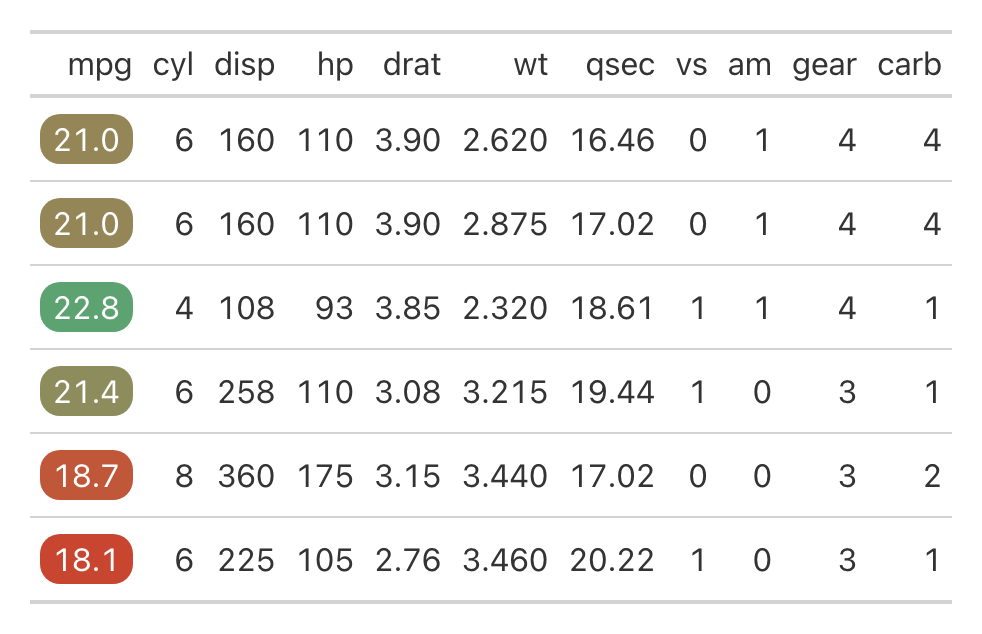
Coloring ordinal ranks
By default, gt_color_pills applies a continuous color
scale based on the range of the data. However, you can also color based
on ordinal ranks within the column by setting fill_type to
“rank”. Additionally, use rank_order to specify whether the
highest or lowest value should be ranked first (“desc” or “asc”,
defaults to descending order).
mtcars %>%
head() %>%
add_row(mpg = 1) %>%
gt() %>%
gt_color_pills(mpg, fill_type = "rank", rank_order = "asc")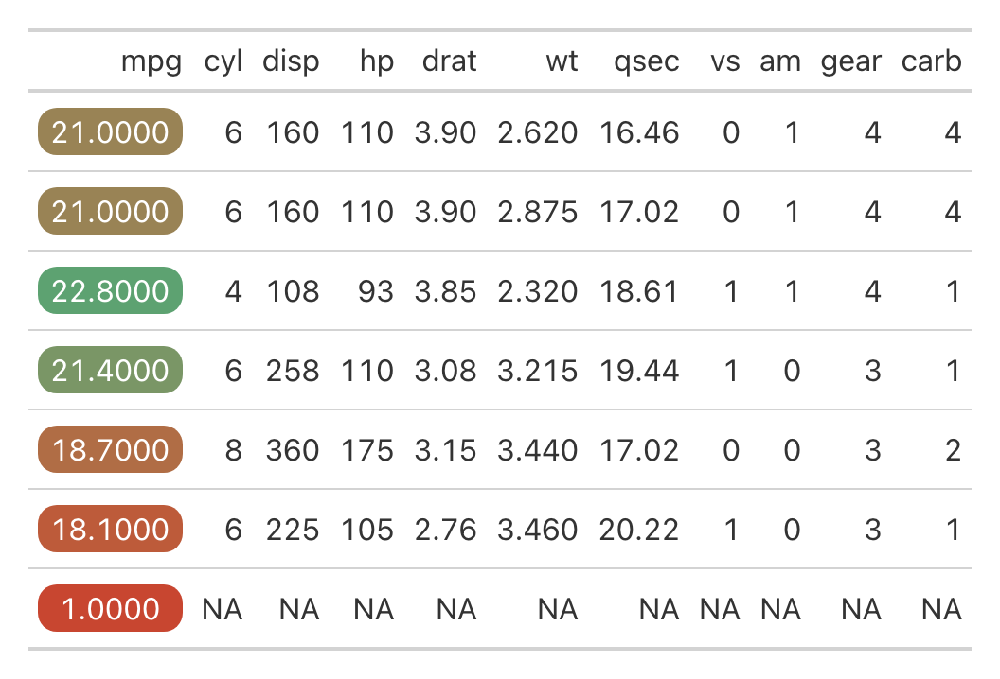
In this example, the new outlier (1 mpg) doesn’t skew the coloring of other values as it would with a continuous scale, where all higher values would be compressed into the upper part of the range (green).
Formatting Options
gt_color_pills supports several value formats: number,
comma, currency, and percent. The default is “number,” but you can
specify the desired format using the format_type argument.
mtcars %>%
select(1:4) %>%
head() %>%
mutate(cyl = cyl * 10e4) %>%
gt() %>%
gt_color_pills(mpg) %>%
gt_color_pills(cyl, format = "comma") %>%
gt_color_pills(disp, format = "currency") %>%
gt_color_pills(hp, format = "percent", scale_percent = FALSE)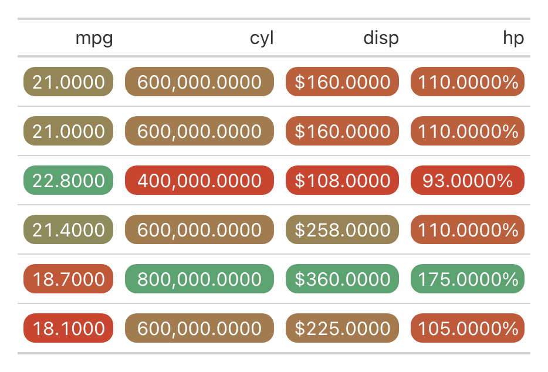
You can also append a custom suffix to the formatted values, such as adding “mpg” to miles per gallon:
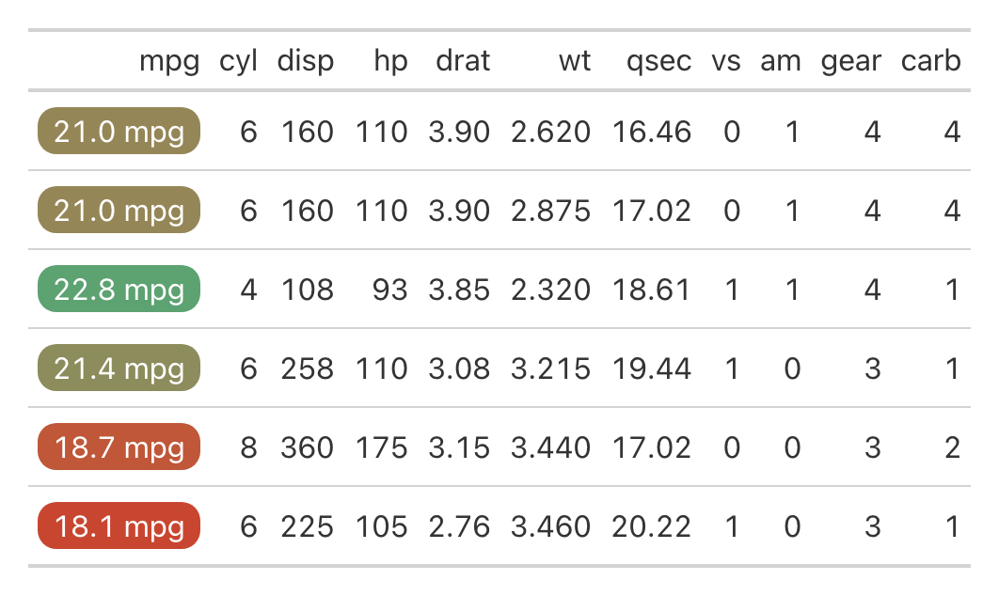
Dynamic Pill Widths and Height
The width of all pills in a column dynamically adjusts to the longest value in that column, with 3px of padding on each side. You can also control the height of the pills using the pill_height argument. By default, it is set to 25px, but you can increase or decrease it as needed.
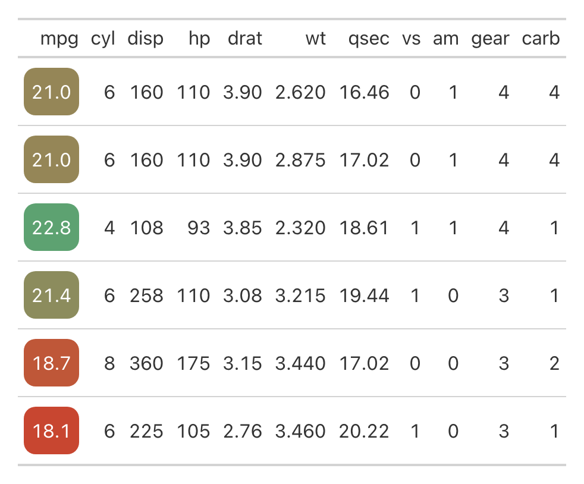
Automatic Text Color for Contrast
gt_color_pills automatically adjusts the text color
inside the pill using gt:::ideal_fgnd_color to ensure
readability. For example, with a palette ranging from white to black,
the function ensures that the text color changes appropriately:
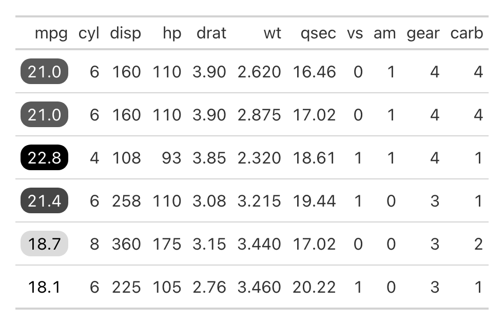
Adding Borders to Pills
You can further customize the pills by adding borders using the
outline_color and outline_width arguments. For
example, setting a red border with a 2px width:
mtcars %>%
head() %>%
gt() %>%
gt_color_pills(mpg, digits = 1, outline_color = "red", outline_width = 2, palette = c("#ffffff", "#000000"))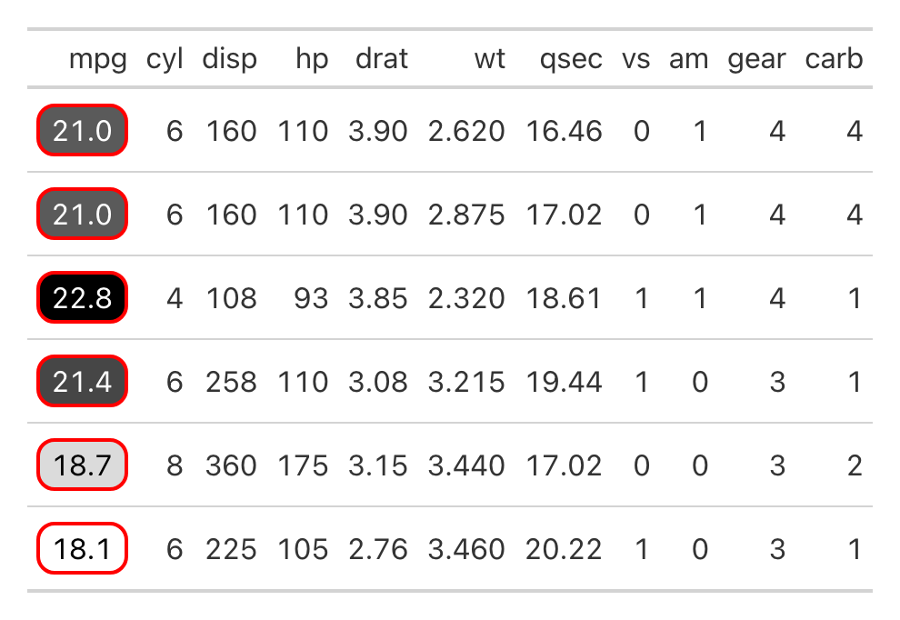
Colored indicator boxes
The gt_indicator_boxes function adds colored boxes to a
gt table, allowing you to visually represent indicator values. This
function lets you define your own rule for what qualifies as a “yes” or
“no” value, choose custom colors, and decide whether to show text within
the boxes.
This function was inspired by an article
published in the New York Times. Prior to making this package, I recreated
the original table using {gt} and custom HTML. A similar process is
used with gt_indicator_boxes.
In general, the data passed to gt when using
gt_indicator_boxes should be in a wide format and look
something like this:
set.seed(123)
sample_data <- tibble::tibble(
id = 1:10,
replicate(7, sample(c(0, 1, NA), 10, replace = TRUE), simplify = FALSE) %>%
setNames(paste0("indicator_", 1:7)) %>%
as_tibble()
)Basic Usage
By default, gt_indicator_boxes colors cells with 1 as
“yes” (colored) and 0 or NA as “no” (uncolored). Here, we apply the
function to all columns except for id, which serves as the key
column.
sample_data %>%
gt() %>%
gt_indicator_boxes(key_columns = "id")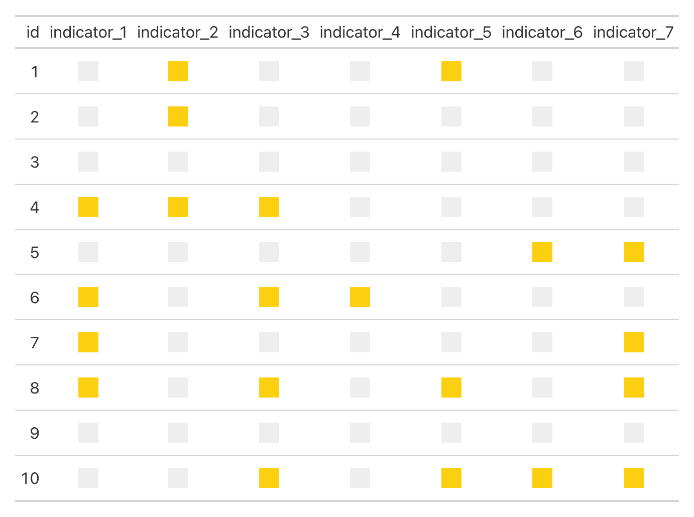
Changing Indicator Values
The 0-1 indicator defaults are customizable using the
indicator_vals argument. You can specify your own values to
define what is considered a “yes” or “no.” For example, if your data
uses 5 to represent “yes” and 0 for “no,” you can set
indicator_vals = c(0, 5):
Showing Text Inside the Boxes
You can choose to display text inside the indicator boxes by setting
show_text = TRUE. This is useful when you want the numeric
values to be visible within the color indicators.
sample_data %>%
gt() %>%
gt_indicator_boxes(key_columns = "id", show_text = TRUE)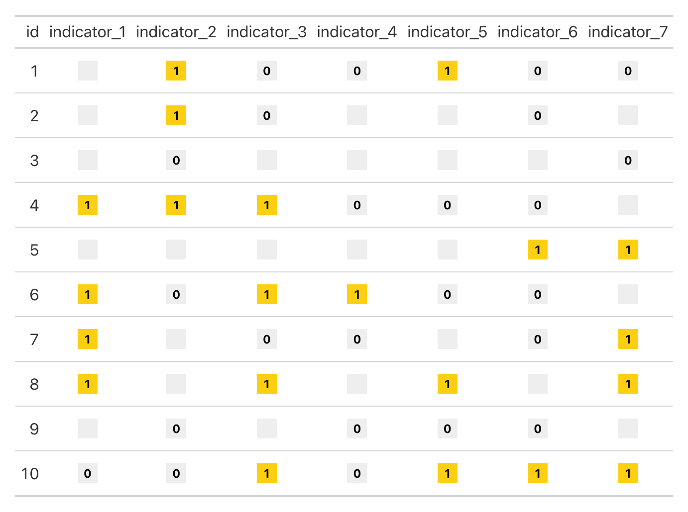
By default, NA values are hidden when using show_text.
However, you can choose to display NA values explicitly by setting
show_na_as_na = TRUE.
sample_data %>%
gt() %>%
gt_indicator_boxes(key_columns = "id", show_text = TRUE, show_na_as_na = TRUE)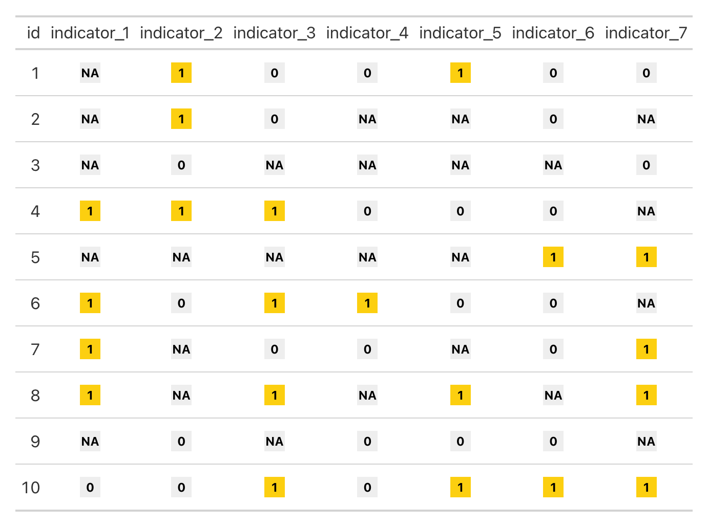
Controlling Which Text is Shown
The show_only argument allows you to display text for
specific values. You can choose to display text only for “yes”
(show_only = “yes”), only for “no” (show_only = “no”), or only for NA
values (show_only = “NA”).
Here’s an example where we show text only for “yes” values:
sample_data %>%
gt() %>%
gt_indicator_boxes(key_columns = "id", show_text = TRUE, show_only = "yes")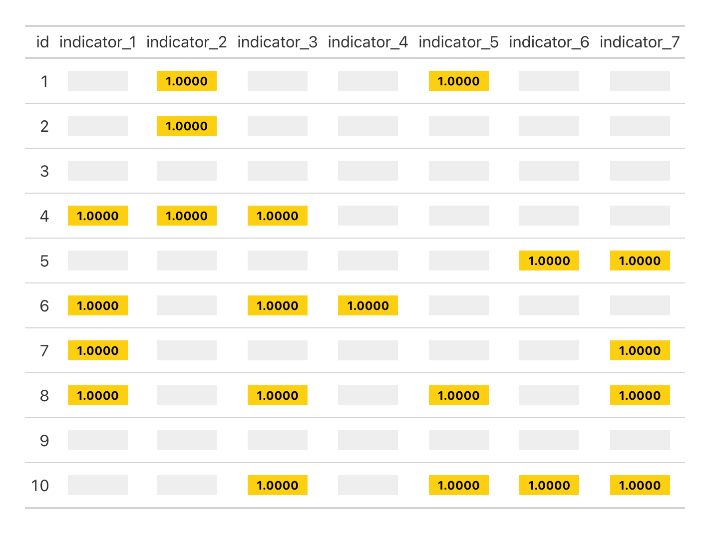
Customizing Colors
The gt_indicator_boxes function allows full control over
the colors used for “yes,” “no,” and NA values. Below, we set “yes”
values to green and “no” values to grey. By default, NA values will
inherit the color associated with “no,” but you can set a unique color
for NAs.
sample_data %>%
gt() %>%
gt_indicator_boxes(key_columns = "id", color_yes = "#28a745", color_no = "#f5f5f5", color_na = "#f39c12")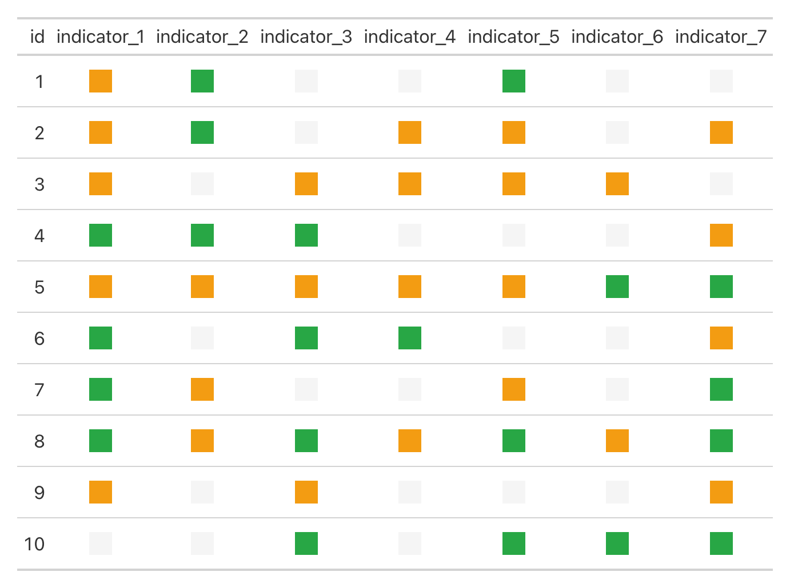
Adding Borders to Boxes
You can also add borders around the indicator boxes using the
border_color and border_width arguments. This
is especially useful when using themes with non-white table backgrounds,
as it helps the boxes stand out more clearly. By default, no border is
applied, but you can specify a color and adjust the width as needed.
Here’s an example where we add black borders with a width of 0.5px
while using gt_theme_sofa.
sample_data %>%
gt() %>%
gt_theme_sofa() %>%
gt_indicator_boxes(key_columns = "id", border_color = "black", border_width = 0.5)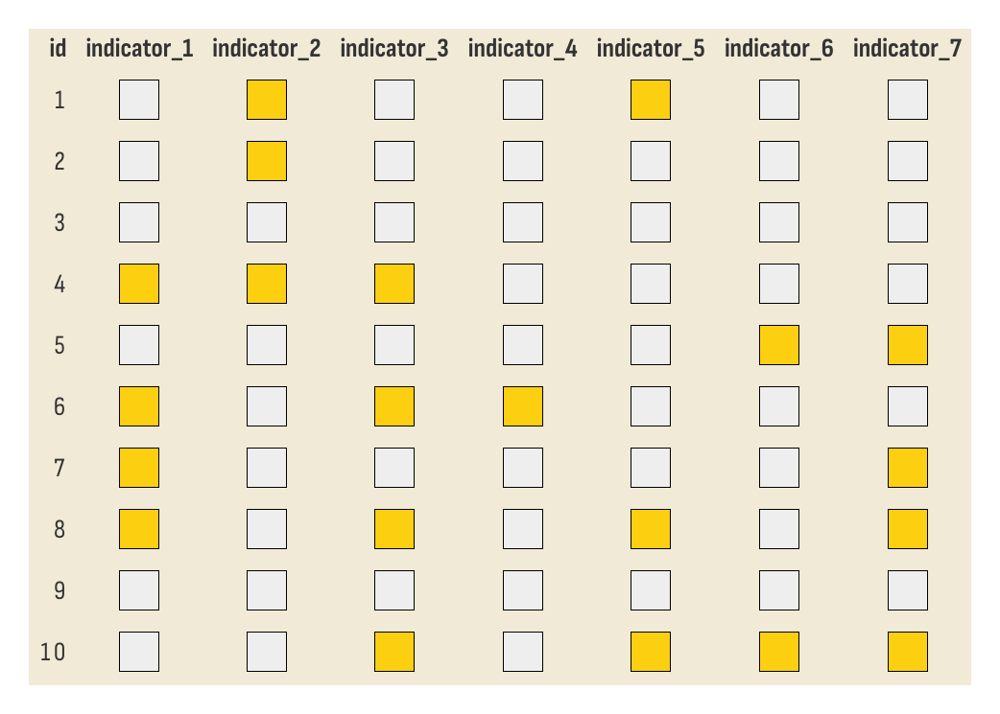
Using Custom Functions for Indicators
The gt_indicator_boxes function is highly flexible,
allowing you to apply custom logic for determining when a box should be
colored. This is particularly useful when the “yes” or “no” status is
not simply based on binary values but follows more complex rules.
Let’s create a spoof sales dataset where we have multiple indicators for different metrics. We’ll use a custom function to define whether a box should be colored based on thresholds for each metric.
set.seed(123)
product_data <- tibble::tibble(
product_id = 1:10,
sales = runif(10, min = 50, max = 200),
customer_satisfaction = runif(10, min = 0.5, max = 1),
defect_rate = runif(10, min = 0, max = 0.1),
return_rate = runif(10, min = 0, max = 0.2)
)In this scenario, we want to define custom rules for each metric:
- Sales: A “yes” indicator if sales are greater than 150.
- Customer Satisfaction: A “yes” indicator if the satisfaction score is greater than 0.75.
- Defect Rate: A “yes” indicator if the defect rate is less than 0.05.
- Return Rate: A “yes” indicator if the return rate is less than 0.10.
custom_indicator_function <- function(x, column_name) {
case_when(
column_name == "sales" ~ x > 150,
column_name == "customer_satisfaction" ~ x > 0.75,
column_name == "defect_rate" ~ x < 0.05,
column_name == "return_rate" ~ x < 0.10,
TRUE ~ NA_real_
)
}
product_data %>%
gt() %>%
gt_indicator_boxes(
key_columns = "product_id",
indicator_rule = custom_indicator_function,
color_yes = "#4CAF50",
color_no = "#FF5722"
)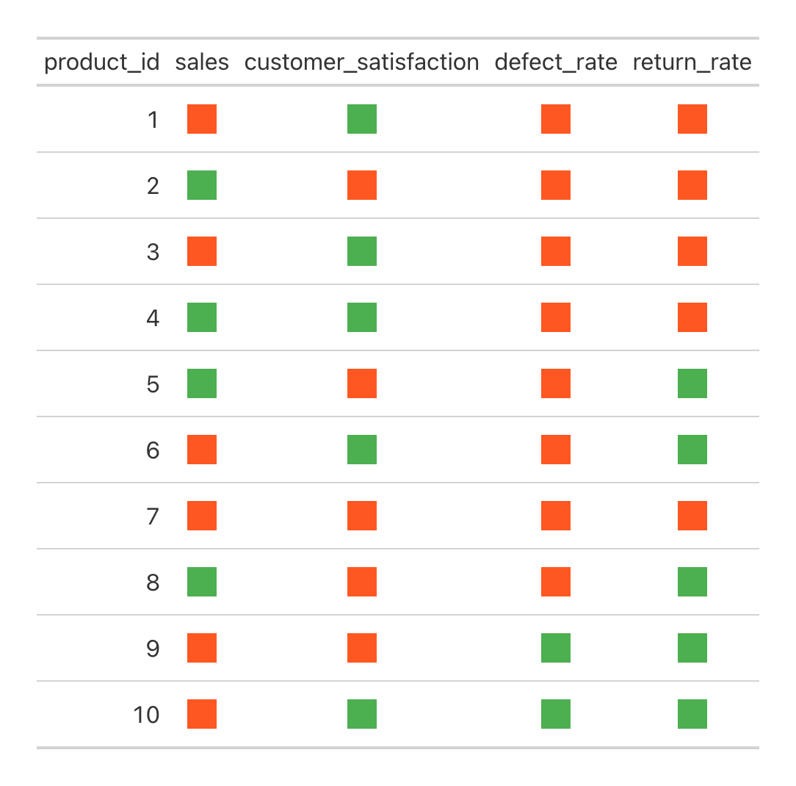
538 Captions
One of my favorite table formats ever is the footnote + caption
combination in old FiveThirtyEight tables. I think it just looks so
clean. I recreated it in this
blog post, and now that feature is baked into gtUtils
with the gt_538_caption function.
Because of how the function is created, it is not recommended to add
additional footnotes if you’re including this in your table. The
function itself takes two arguments: top_caption and
bottom_caption. The top caption is aligned to the left,
while the bottom caption is aligned to the right. The top caption is
essentially a footnote – so you can edit any formatting by targetting
that location – and the bottom caption is a source note. The line
separating the two will be the same color as your footnote text.
nycflights13::flights %>%
slice_sample(n = 5) %>%
select(1:8) %>%
gt(id = "table") %>%
gt_theme_savant() %>%
gt_538_caption("Top of gt_538_caption", "Bottom of caption") %>%
tab_header("Sample table")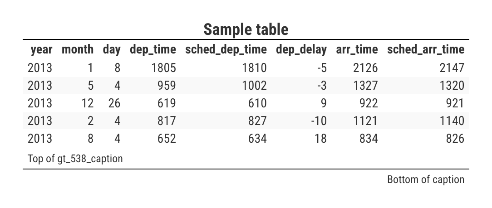
For example, let’s adjust the bottom text by making it larger and bold.
nycflights13::flights %>%
slice_sample(n = 5) %>%
select(1:8) %>%
gt(id = "table") %>%
gt_theme_savant() %>%
gt_538_caption("Top of gt_538_caption", "Larger and bolder") %>%
tab_style(locations = cells_source_notes(), cell_text(weight = "bold", size = px(16))) %>%
tab_header("Sample table")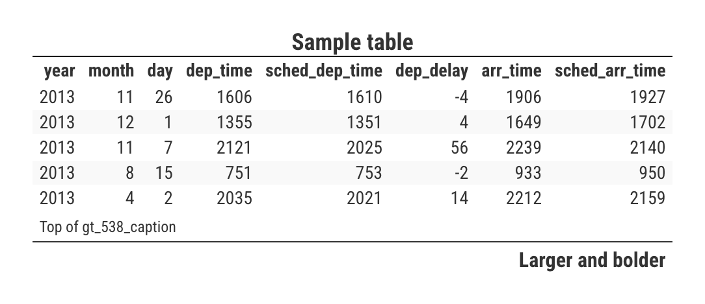
Boxes for legends
The gt_centered_legend function allows you to create a
centered title, subtitle, and a key or legend in a gt table. You can
specify whether the legend labels appear inside or outside the colored
boxes.
You need to pass through a legend tibble with corresponding color and label entries, like so:
key_info <- tibble::tibble(
color = c("#FCCF10", "#EEEEEE"),
label = c("Yes", "No")
)
sample_data %>%
select(1:3) %>%
gt() %>%
gt_theme_savant() %>%
gt_indicator_boxes(key_columns = "id") %>%
gt_centered_legend(
key_info = key_info,
heading = "Sample title",
subtitle = "Sample subtitle",
label_placement = "outside"
)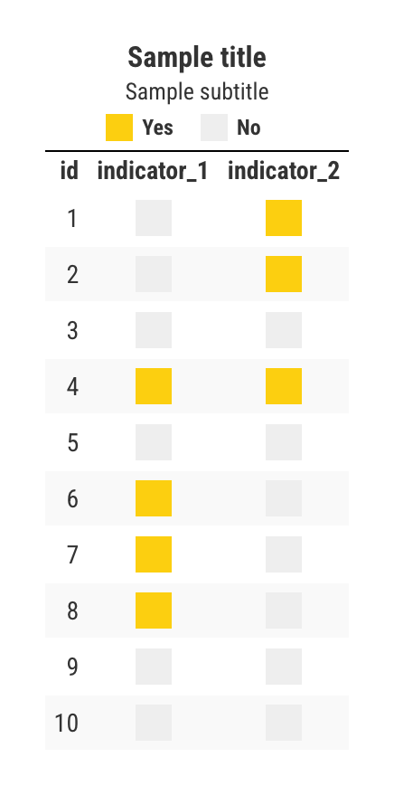
You can also place the labels inside the colored boxes by
setting label_placement = "inside". This is helpful when
space is limited or when you want the labels integrated with the color
indicators.
key_info <- tibble::tibble(
color = c("#FCCF10", "#EEEEEE"),
label = c("Yes", "No")
)
sample_data %>%
select(1:3) %>%
gt() %>%
gt_theme_savant() %>%
gt_indicator_boxes(key_columns = "id") %>%
gt_centered_legend(
key_info = key_info,
heading = "Sample title",
subtitle = "Sample subtitle",
label_placement = "inside"
)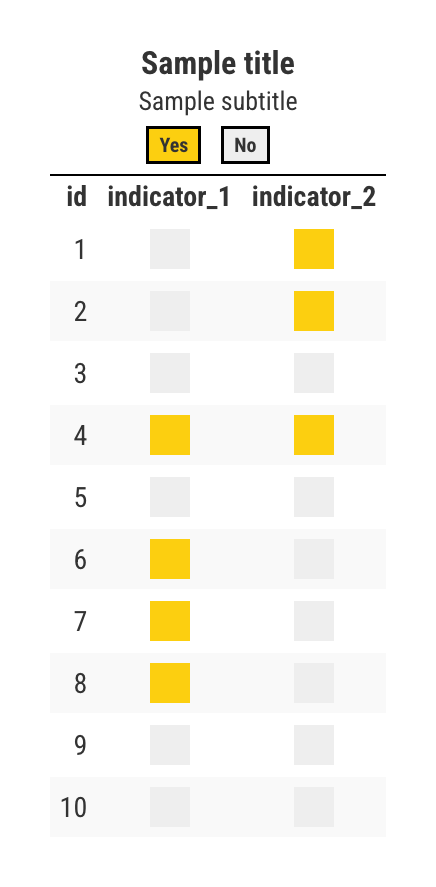
Stacked column headers
The gt_column_subheaders function allows you to create
stacked column headers with customizable subtitles in a gt table. This
is useful for displaying extra context or explanations under the main
column headers.
Basic Usage
Here’s a simple example where we add custom headings and subtitles
for two columns: mpg and hp using the mtcars dataset.
mtcars %>%
head() %>%
select(mpg, hp) %>%
gt() %>%
gt_theme_savant() %>%
gt_column_subheaders(
mpg = list(heading = "Miles per Gallon", subtitle = "Fuel Efficiency"),
hp = list(heading = "Horsepower", subtitle = "Power Output"),
heading_color = "black",
subtitle_color = "gray"
)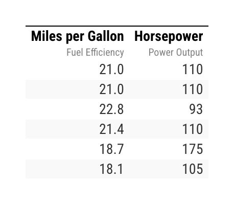
Customizing Headings and Subtitles
You can easily customize the colors and font weights for both the
main headings and subtitles by using the heading_color,
subtitle_color, heading_weight, and
subtitle_weight arguments.
For instance, here’s how you can apply different colors and font styles:
mtcars %>%
head() %>%
select(mpg, hp) %>%
gt() %>%
gt_theme_savant() %>%
gt_column_subheaders(
mpg = list(heading = "Miles per Gallon", subtitle = "Fuel Efficiency"),
hp = list(heading = "Horsepower", subtitle = "Power Output"),
heading_color = "darkred",
subtitle_color = "black",
heading_weight = "normal",
subtitle_weight = "lighter"
)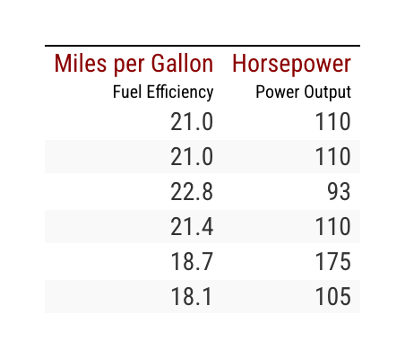
Stacking multiple tables
The gt_stack_tables function allows you to vertically
stack multiple gt tables into a single output. This is particularly
useful when you want to display or save multiple tables in one
continuous view, e.g. a game box score.
For example, let’s define three sample tables. In the first table, we’re going to include a table header and subheader. In the final table, we’re going to include a caption. We’re not going to include any annotations in the final table.
tab1 <- nycflights13::flights %>%
select(2:8) %>%
slice_sample(n = 5) %>%
gt() %>%
gt_theme_kenpom() %>%
tab_header("Stacked Tables", "An example using gt_stack_tables")
tab2 <- nycflights13::flights %>%
select(2:8) %>%
slice_sample(n = 5) %>%
gt() %>%
gt_theme_kenpom()
tab3 <- nycflights13::flights %>%
select(2:8) %>%
slice_sample(n = 5) %>%
gt() %>%
gt_theme_kenpom() %>%
gt_538_caption("You can include a caption on the bottom table", "Lower captions too")When using gt_stack_tables, simply pass the tables as a
list:
gt_stack_tables(list(tab1, tab2, tab3))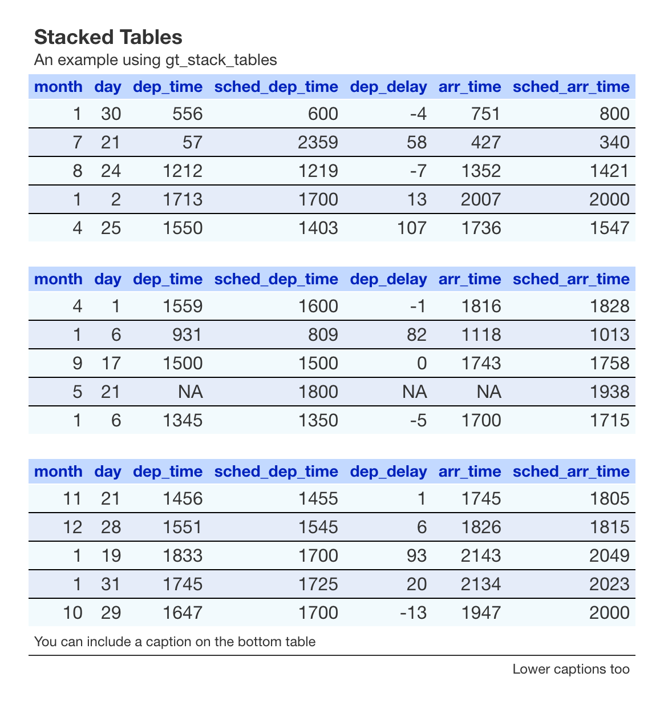
Saving and cropping tables
One of the most useful features for creating polished, ready-to-share
tables is the gt_save_crop function. This function not only
saves the table as an image but also trims any excess whitespace. It’s
particularly useful when you want to save a version of your table for
use on social media, etc.
Behind the scenes, gt_save_crop leverages
gtsave_extra from the gtExtras package –
which itself uses webshot2 – and then passes a temporary
save of that table to magick. There, magick
will automatically crop your table with even whitespace widths on all
sides.
The bg argument controls the color of the background
added around the table. By default, it’s set to “white”, but you can
specify any valid color. If you are using a theme from
gtUtils and are unsure what background color to use, you
can reference the theme’s background color using
gtUtils::theme_bg to ensure consistency across your
tables.
All tables on this site, bar for a few at the top of this vignette, were saved with this function.